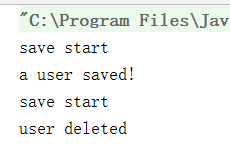
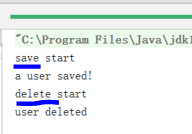
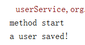
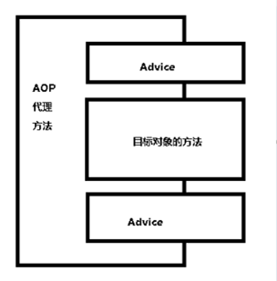
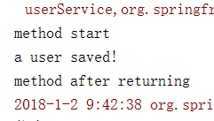
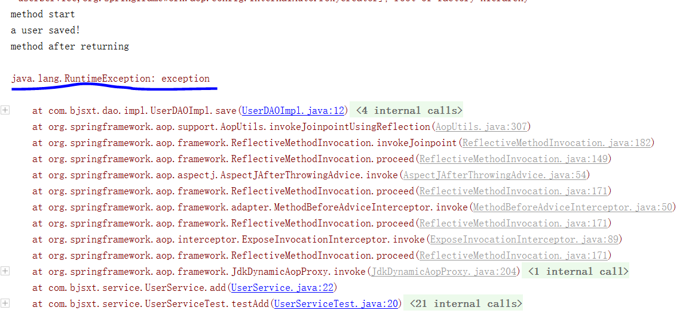
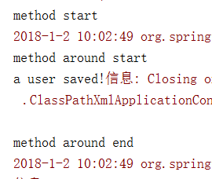
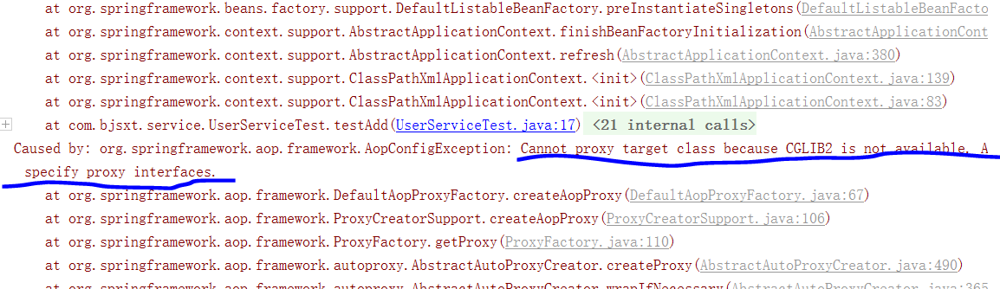
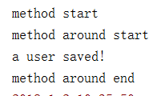

第十九课. AOP-Introduction-1
什么是AOP?
面向切面编程Aspect-Oriented-Programming
是对面向对象的思维方式的有力补充
现在我们设想一个场景，就是要给DAO添加一个记录日志功能，也就是在它执行save函数之前，能够将日志打印到控制台。
首先想到的第一个做法是，在save方法内部记录日志：
第二种方法，考虑你已经交付代码，这时候则不能修改源码，所以可以采用继承的方式，重写save方法：
第三种方法，就是去实现UserDAO接口，然后将我们要加日志的类的对象放入这个新类内部，并对对象加日志：
设想这样一个场景，我们要给100个UserDAO加日志，怎么办？总不能去挨个组装吧，所以这时候我们需要jdk提供的代理功能了。
第二十一课. AOP-Introduction-3
这一节试着用动态代理来处理代码。
重写LogInterceptor，让LogInterceptor去实现InvocationHandler接口：
这样就可以给target对象的方法前加上beforeMethod这个方法。
我们来测试一下：
具体内部怎么实现，可以参考前面的动态代理的笔记：
https://caocan.github.io/2017/12/26/DesignPattern5/
如果我们在UserDAO中增加了一个delete方法：
实现接口：
测试：
运行：

发现不光给add方法增加了记录日志功能，而且delete方法也被加上了日志功能。
如果我们想针对每一种方法，为止动态生成对应的处理逻辑，怎么做？
由于我们可以拿到Method，所以可以根据Method不同来生成对应的结果：
这时候运行会报一个小小的错误，需要给UserDAOImpl3中方法的对应函数传入一个参数：
运行：

成功。
第二十二课. AOP-Annotation-1
Aspectj是一个专门用来产生动态代理，或者说专门面向切面编程的框架，Spring实现使用了它。
为了让Spring代码可以使用AOP的Annotation，我们可以将两个jar包引入：
然后在beans.xml中进行配置：
这样我们就可以使用AOP的注解了。
我们使用AOP的注解在UserDAOImpl的save方法前加一段记录日志的逻辑：
运行一下：

发现逻辑被成功加了上去。
AOP的一些术语：
- 通知、增强处理（Advice） 就是你想要的功能，也就是上说的安全、事物、日子等。你给先定义好，然后再想用的地方用一下。包含Aspect的一段处理代码
- 连接点（JoinPoint） 这个就更好解释了，就是spring允许你是通知（Advice）的地方，那可就真多了，基本每个方法的钱、后（两者都有也行），或抛出异常是时都可以是连接点，spring只支持方法连接点。其他如AspectJ还可以让你在构造器或属性注入时都行，不过那不是咱们关注的，只要记住，和方法有关的前前后后都是连接点。
- 切入点（Pointcut） 上面说的连接点的基础上，来定义切入点，你的一个类里，有15个方法，那就有十几个连接点了对吧，但是你并不想在所有方法附件都使用通知（使用叫织入，下面再说），你只是想让其中几个，在调用这几个方法之前、之后或者抛出异常时干点什么，那么就用切入点来定义这几个方法，让切点来筛选连接点，选中那几个你想要的方法。
- 切面（Aspect） 切面是通知和切入点的结合。现在发现了吧，没连接点什么事，链接点就是为了让你好理解切点搞出来的，明白这个概念就行了。通知说明了干什么和什么时候干（什么时候通过方法名中的befor，after，around等就能知道），二切入点说明了在哪干（指定到底是哪个方法），这就是一个完整的切面定义。
- 引入（introduction） 允许我们向现有的类添加新方法属性。这不就是把切面（也就是新方法属性：通知定义的）用到目标类中吗
- 目标（target） 引入中所提到的目标类，也就是要被通知的对象，也就是真正的业务逻辑，他可以在毫不知情的情况下，被咋们织入切面。二自己专注于业务本身的逻辑。
- 代理（proxy） 怎么实现整套AOP机制的，都是通过代理，这个一会儿给细说。
- 织入（weaving） 把切面应用到目标对象来创建新的代理对象的过程。有三种方式，spring采用的是运行时，为什么是运行时，在上一文《Spring AOP开发漫谈之初探AOP及AspectJ的用法》中第二个标提到。
- 目标对象 – 项目原始的Java组件。
- AOP代理 – 由AOP框架生成java对象。
- AOP代理方法 = advice + 目标对象的方法。
下面的图简化和形象的说明了AOP

形象上看，AOP编程，就像做汉堡一样。
原始面包 - 目标对象的方法。业务组件就行了。
肉块 - Advice
汉堡 - AOP代理的方法。
将肉加到面包 - 引入
关键就是：切面定义了哪些连接点会得到通知。
第二十三课. AOP-Annotation-2
有了上面的术语，我们现在就用代码来深入理解一下这些概念。
我们想在一个方法的前后都加上日志，那么就需要在方法的前面加@Before，在方法的后面加@AfterReturning。
代码如下：
运行后的结果：

发现方法的前后都被成功加上了日志。
但是每对一个方法前后加日志，就需要这么定义一次注解，好麻烦的，能不能简单一些？
我们可以定义一系列切入点的集合，也就是Pointcut：
运行后也可以成功加上日志。
再来测试一下@AfterThrowing，先在UserDAOImpl中抛出一个异常：
然后在LogInterceptor中加上@AfterThrowing注解：
|
|
运行，会报错：

这样就成功捕捉到了异常，之后就可以在@AfterThrowing中的方法加入我们对应的处理逻辑。
如果我们想在一个方法前后都加上逻辑，怎么做？
这时候用到了@Around：
运行：

成功。
如果我们想在service上加切入点，直接加可以吗？
运行：

很明确说出了一个问题，service实现的不是一个接口，不能直接使用jdk提供的代理功能，所以要引入一个jar包：
cglib-nodep-2.1_3.jar
这次我们再运行：

这次就可以顺利运行了。
第二十四课. AOP-XML
这一节中，我们不再使用Annotation来完成AOP功能，而是使用xml来实现。
首先需要将上一节的注解以及配置都删除掉，然后我们来配置beans.xml：
来讲一下具体执行过程，首先代码执行UserServiceTest，执行到service的add方法的时候，spring发现这个方法符合expression="execution(public * com.bjsxt.service..*.add(..))"
这个表达式，并且这个表达式上面有一个切面，这个切面引用了一个切面类对象logInterceptor，在这个里面它要求，在这个方法（add方法）执行之前，aop:before，会执行我们logInterceptor的方法，哪一个方法呢？它就是before方法，这样我们的切面逻辑就加进去了。
也可以将上面的xml改成这样：
这样就不需要参考了，都可以。
提倡使用xml，因为我们很多时候用的切面都是spring帮我们提供的第三方类，所以不能在上面加注解，这时候用xml方式就是比较好的方式。